第 2 轮：星璃「真名契约仪式」拟真度与动效重做评审
第 2 轮拟真装帧、纯纸墨交互与全流程收口（第 0 幕至合书嵌宝与典藏态）是否达到定稿标准？
推荐 A 认可定稿：第 1 轮逐幕意见已全部落地，桌面与窄屏零溢出且全流程交互零报错，可转入正式 Spec 与全身立绘差分生图。
第 0 幕 · 品牌猫猫徽记与极简书庭邀请
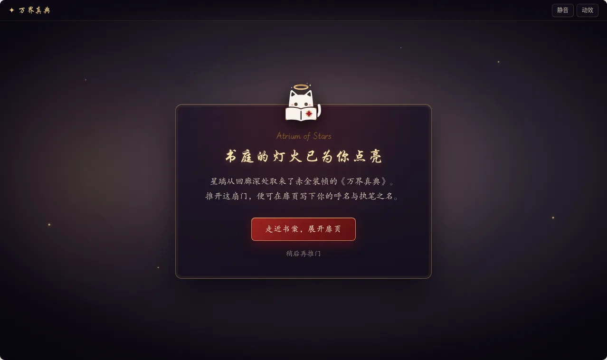
第 1 幕 · 动态封面、书脊饰带与中央宝石空槽（零书内 UI）
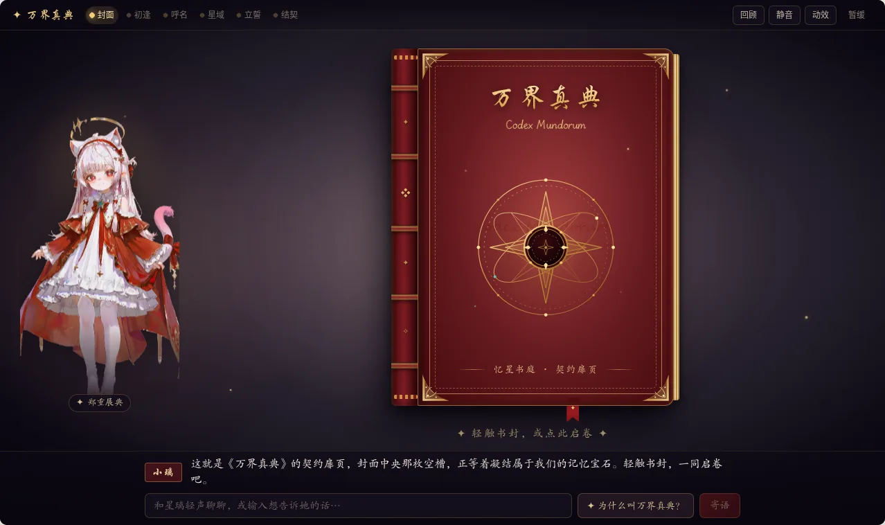
第 1 幕 · 启卷《初逢 · 忆星书庭》（活体徽记 + 全手写体 + 书外翻页）
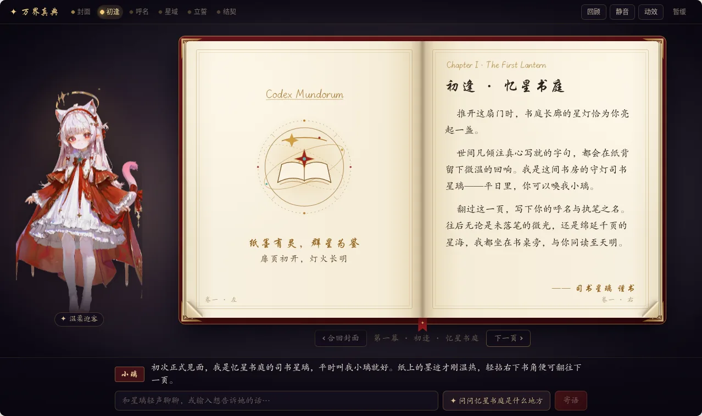
第 2 幕 · 精装藏书票 + 纯纸墨手写呼名与折纸笔名便笺
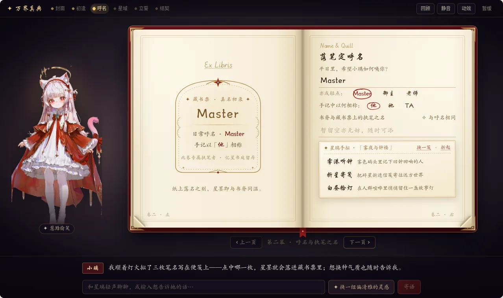
第 3 幕 · 随填写点亮的执笔者星域图 + 横格笺纸星愿
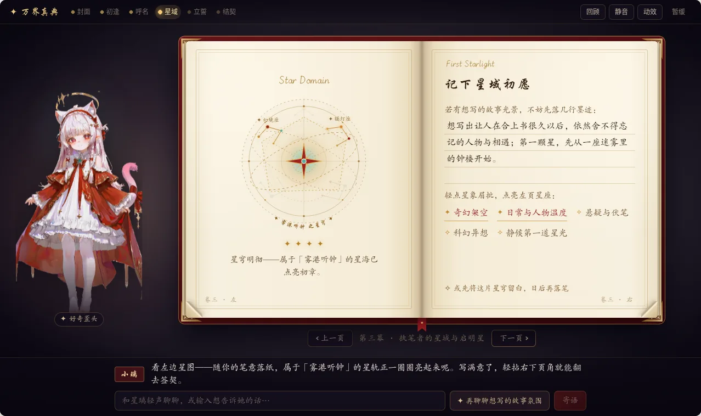
第 4 幕 · 书内夹页纵向羊皮纸真名契约书
第 5 幕 · 记忆宝石凝结 · 待合书镶嵌
终幕 · 合上《万界真典》，宝石已稳稳嵌印封面槽位
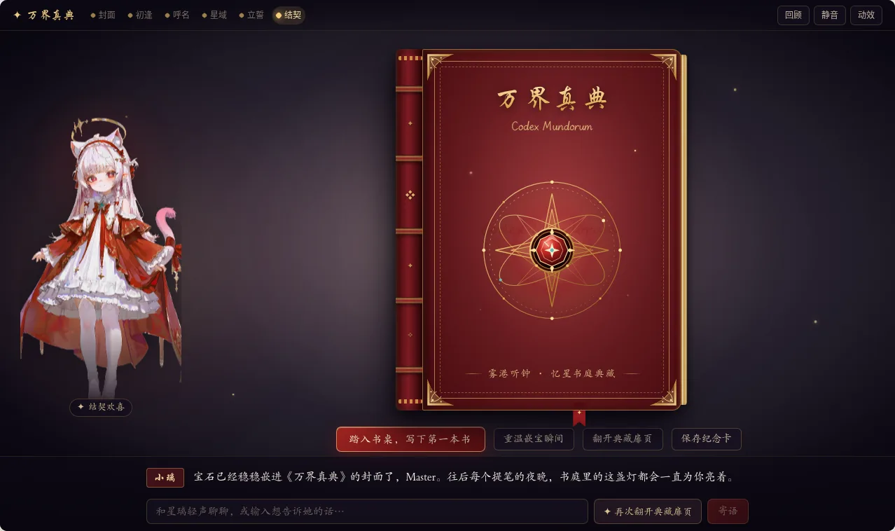
二次打开 · 典藏契约档案与真名誓约留存
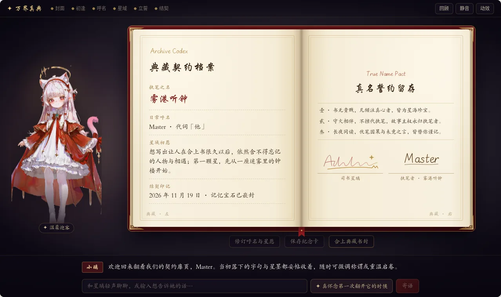
对话回顾 · 右侧「书庭耳语录」抽屉
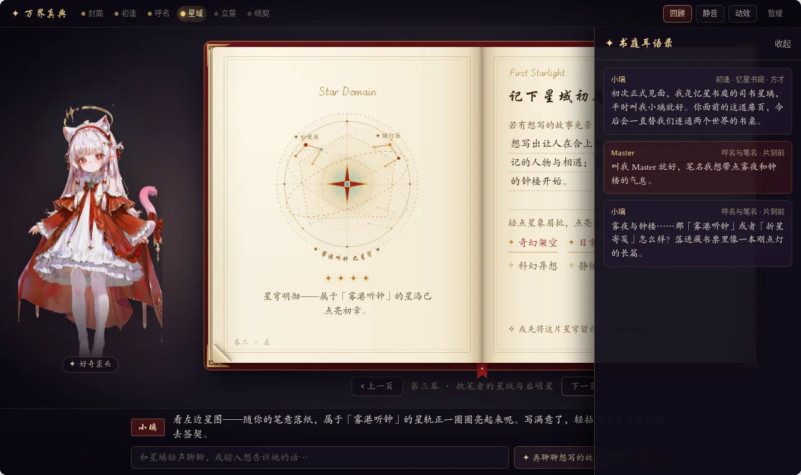
A 认可定稿，转入 Spec 与素材阶段
整体拟真度、版式节奏与交互范式已达标，正式立项时按此沉淀 Spec 与生成全身 7 差分立绘。
B 主体满意，需微调局部细节
整体方向认可，但在具体某一幕的构图、文案、字号或配色上还需局部打磨（在备注写明幕次与意见）。
C 仍有较大方向需重做
对封面质感、手写交互或装帧风格还有结构级调整想法（在备注写明期望方向）。
第 4 幕采用“书页间夹入一张纵向羊皮纸契约书、双人并肩署押”方案，是否满意？
推荐 A 保留纵向夹页契约：正式合同一体性强，司书星璃与执笔者落款紧邻并置；默认落款花体 Master，可直接落笔手写或切换上传签名图与朱砂印。
A 保留当前纵向夹页羊皮纸契约书
双页铺底、纵向羊皮纸居中夹入，三条誓约、双方并排署押与底部火漆封缄收束成一张完整契约。
B 改为铺满左右双页的大跨页合同
不再做夹页纸张，将条款铺在左页或跨页通栏，双人落款与火漆集中在右页下半部。
C 保留夹页，微调条款或落款排版
认可夹页形式，但希望调整夹页纸幅比例、誓约措辞或签名上传/手写交互细节（备注写明）。
认可 960×700 / 390×844 响应式版式与实机动态效果手感？
推荐同意：底部字幕锁定 48px 固定高度杜绝重排，全尺寸零横向溢出；静态图未覆盖的 3D 翻封面/翻页、英文逐笔描画与合书嵌宝动画建议在 Component Lab（ContractCeremonyWindow 场景 interactive）实机翻阅确认。
960×700 · 第 2 幕双页（藏书票 + 便笺零断行）
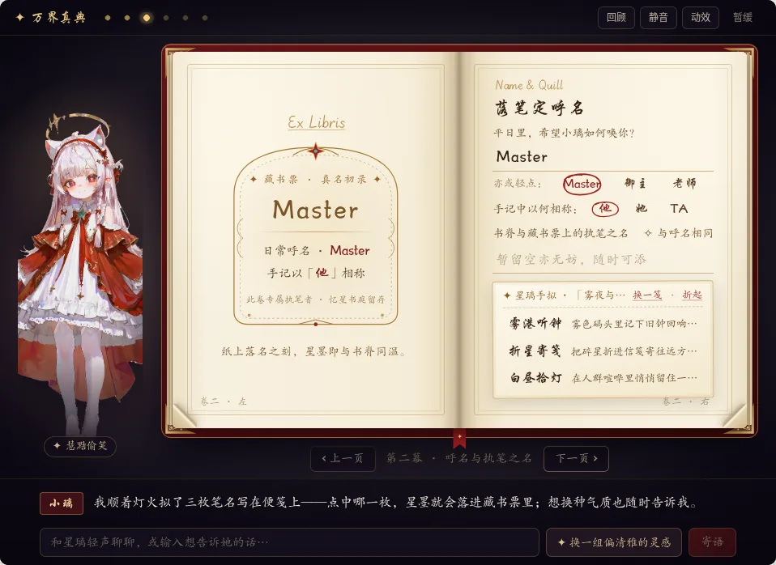
960×700 · 第 4 幕夹页契约
390×844 · 精装封面与宝石空槽
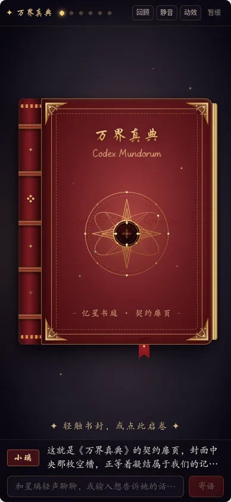
390×844 · 第 2 幕单页切换
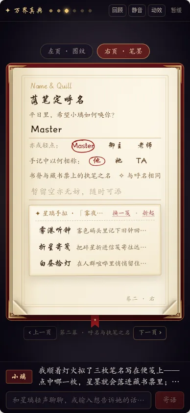
390×844 · 对话回顾全宽抽屉
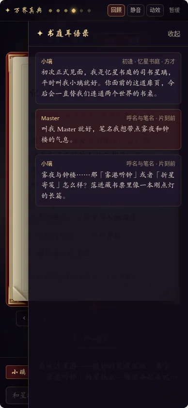
| 动效项 | 实机表现 | 试玩触发方式 |
|---|---|---|
| 第 0 幕推门切入 | 邀请卡片柔和淡出缩放，暗夜星尘转场浮现赤金精装封面 | 场景 invite 点击「走近书案，展开扉页」 |
| 拟真 3D 翻封面与翻页 | 绕书脊 3D 翻开封面；各幕右下/左下书角拟真卷边可点击或拖拽翻页，悬停书封不再抖动位移 | 点击封面或书角，亦可使用书外底栏「上一页 / 下一页」 |
| 双语魔法书写浮现 | 英文标题（如 Codex Mundorum、Ex Libris、Master）由 CalligraphyStrokeText 逐笔 SVG 描画，中文正文星墨错峰渐显 |
翻至任一幕自动播放，或在 Lab 工具栏点「重放星墨」 |
| 动态活体插画与星域生长 | 封面星环流转、第 1 幕书庭徽记呼吸微动、第 3 幕星域图按右侧星愿与眉批 5 阶逐层点亮航道 | 第 3 幕依次勾选星象眉批或输入初愿文字观察左页演化 |
| 固定高度台词打字机 | 底部星璃字幕区锁死 48px 高度零跳动，逐字星墨打字机输出 | 翻页或于底部输入框寄语给星璃 |
| 合书宝石镶嵌动画 | 第 5 幕合上《万界真典》后记忆宝石凌空飞落、精准嵌印封面中央空槽并点亮赤金星环与典藏铭文 | 第 5 幕点击「合上《万界真典》，嵌印宝石」，终幕可点「重温嵌宝瞬间」 |
已按第 1 轮反馈全部修改完成（不用答）
| 幕次 / 范围 | 第 1 轮开发者意见 | 第 2 轮已落改动 |
|---|---|---|
| 第 0 幕 | 重绘猫猫徽记对齐品牌 Logo；删除“约 2 分钟……”元信息行；补充进入第 1 幕切入动画 | 按品牌正式 Logo SVG 重绘猫猫伏书与星环徽记；删去元信息行并修正折行；补齐推门切入精装封面过渡动画 |
| 封面与装帧 | 增设宝石镶嵌槽位与合书嵌宝动画；移除书面上“轻触封缄”UI；取消 hover 抖动；丰富书脊装饰与动态封面特效；补齐 3D 翻封面/翻页动画 | 封面中央新增赤金宝石槽位与流转星轨；加厚隆起竹节书脊与黄铜卷草护角；去除书内 UI 并将引导移至书外；取消 hover 位移；实装 3D 翻封面、书角手翻/拖拽翻页及合书嵌宝终幕 |
| 第 1 幕 | 左侧徽记做成活体动效；全书统一手写体；中文渐显 + 英文逐笔书写；移除书内翻页按钮移到书外；提升扉页文案文艺感 | 左侧「忆星书庭」徽记接入动态微动与星尘；全书去除印刷体统一手写体；英文由 SVG 逐笔描画、中文星墨渐显；移除书内按钮改书角手翻 + 书外导览栏；重写扉页文艺正文 |
| 第 2 幕与底栏 | 拉升左页格调；固定底部字幕高度不重排并加打字机动画；称谓/笔名去除普通 UI 表单控件感 | 左页重做为拱门烫金藏书票（Ex Libris）；底栏锁定 48px 高度 + 逐字打字机星墨；右页改为纯纸墨底线手写 + 朱笔手绘勾圈 + 折纸笔名灵感便笺 |
| 第 3 幕 | 左页星域图随右侧填写进度动态完善；优化图下文案；右侧同第 2 幕去除 UI 控件感 | 星域图随填写 5 阶动态点亮星轨与航道并联动诗意结语；右页改用淡金横格笺纸手写区与星象眉批 |
| 第 4 幕 | 增强合同正式感、缩短双人签名间距（支持夹页纵向契约）；取消用户约定输入改为同格签名（默认 Master、支持手写与上传图片） |
重做为双页间夹入的纵向羊皮纸契约书，司书星璃与执笔者紧邻并排落款；移除约定输入框，右栏默认花体 Master，支持直接落笔手写、上传签名图片及朱砂藏书印 |
仍待正式落地阶段补齐的素材与平台依赖（不用答）
| 类别 | 待补项 | 当前草稿占位 | 正式落地依赖 |
|---|---|---|---|
| 立绘差分 | 按 D2 决定生成星璃 7 张全身透明立绘差分（舞台按场景裁切半身或全身） | 抠底母版全身立绘 lyra-master-cutout.webp + 情绪铭牌 |
设计定稿后单独立项生图 |
| 离线字体 | 随包离线分发的中英文手写体 WebFont 子集 | 本机楷体与手写回退栈（LXGW WenKai / STKaiti / Kaiti SC）+ 英文 SVG 路径描画 |
正式插件引入开源可商用字体子集打包 |
| 声景音频 | 真实 Foley 纸页、羽笔、风铃与宝石嵌合音效（可选） | Web Audio API 程序合成 7 组克制音效，默认静音可开 | 可沿用零体积合成音或替换为实录短音频 |
| 平台与中间人 | nbook.bots、bot://memory/、ToolContext.ask() 与隐身 ceremony.* 舞台工具 |
草稿纯内存态 + 本地剧本回执 + 前端导出纪念卡 PNG | 依赖 w00043（t06 主对话 / t09 Bot 记忆）落地后另起 Spec 与实现计划 |
已定（2026-11-18 设计定稿 + 2026-11-19 第 1 轮 D1–D5）
- 整体基调（D1）：暗夜星案、赤金精装书、书侧星璃陪伴与底部极轻字幕条；全书手写体无 TTS，台词同步星墨浮现。
- 立绘规格（D2）：后续 7 差分按全身立绘生成，舞台摆放时可按场景裁切半身或全身呈现。
- 签字默认方式（D3）：第 4 幕默认手写星墨落款（预填花体
Master并支持直接提笔手写或上传图片），保留一键切换朱砂印章花押；长按 1 秒火漆封缄且保留无障碍轻点完成。 - V1 主持范围（D4）：V1 仅开放星璃自主持，不启用 V2「真典司仪」宣礼条，代码预留接口扩展位。
- 响应式与回顾（D5）：960×700 / 390×844 窄屏单页切换与右侧「书庭耳语录」对话回顾抽屉布局。
- 平台归属与即时生效：产物归属
bot://memory/，仪式结束后主对话完整保留仪式上下文当轮自然改口，下次 compaction 自动刷新常驻称呼；二次打开分流至典藏契约书。